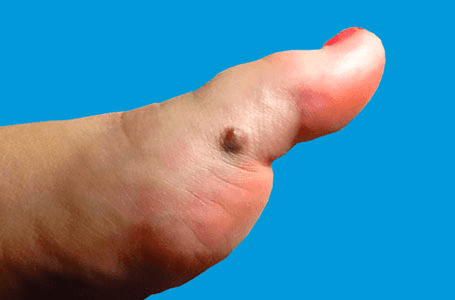

What is a melanoma?
Cutaneous malignant melanoma is a cancer of the pigment cells of the skin. If it is treated early, the outlook
is usually good. It is not contagious.
The word ‘melanoma’ comes from the Greek word ‘melas’, meaning black. Melanin is the dark pigment that gives the
skin its natural colour. Melanin is made in the skin by pigment cells called melanocytes. After our skin is exposed
to sunlight, the melanocytes make more melanin, and so the skin becomes darker.
Melanocytes sometimes grow together in harmless groups or clusters, which are known as moles. Most people have
between 10 and 50 moles and often they are darker than the surrounding skin.
Melanomas can come up in or near to a mole, but can also appear on skin that looks quite normal. They develop
when the skin pigment cells (melanocytes) become cancerous and multiply in an uncontrolled way. They can then
invade the skin around them and may also spread to other areas such as the lymph nodes, liver and lungs.

The most important preventable cause is exposure to too much ultraviolet light in sunlight, especially during the
first 20 years of life. There is lots of evidence linking melanoma to this, and melanomas are especially common
in white-skinned people who live in sunny countries. The use of artificial sources of ultraviolet light, such as
sun beds, also raises the risk of getting a melanoma.
Some people are more likely to get a melanoma than others:
- People who burn easily in the sun are particularly at risk. Melanoma occurs most often in fair-skinned people
who tan poorly. Often they have blond or red hair, blue or green eyes, and freckle easily. Melanomas are
less common in dark-skinned people.
- Past episodes of severe sunburn, often with blisters, and particularly in childhood, increase the risk of
developing a melanoma. However, not all melanomas are due to sun exposure, and some appear in areas that
are normally kept covered.
- People with many (more than 50) ordinary moles, or with a very large dark hairy birthmark, have a higher
than average chance of getting a melanoma.
- Some people have many unusual (atypical) moles (known as ‘dysplastic naevi’). They tend to be larger than
ordinary moles, to be present in large numbers, and to have irregular edges or colour patterns.
The tendency to have these ‘dysplastic naevi’ can run in families and carries an increased risk of getting a melanoma.
- The risk is raised if another family member has had a melanoma.
- People who have already had one melanoma are at an increased risk of getting another one.
- People with a damaged immune system (e.g. as a result of an HIV infection or taking immunosuppressive drugs,
perhaps after an organ transplant) have an increased chance of getting a melanoma.
About 1 in 10 of people with a melanoma have family members who have also had one. There are several reasons for this.
Fair skin is inherited; dysplastic naevi can run in families, as can a tendency to have large numbers of ordinary moles.
Melanomas may not cause any symptoms at all, but tingling or itching may occur at an early stage. Some melanomas start
as minor changes in the size, shape or colour of an existing mole (see below): others begin as a dark area that can
look like a new mole. Later on a melanoma may feel hard and lumpy, and bleed, ooze or crust up.
All melanomas do not look the same, and there are several different types. The ABCD system (below) tells you some of the
things to look out for.
A melanoma may show one or more of the following features:
- Asymmetry – the two halves of the area differ in their shape.
- Border – the edges of the area may be irregular or blurred, and sometimes show notches.
- Colour – this may be uneven. Different shades of black, brown and pink may be seen.
- Diameter - most melanomas are at least 6 mm. in diameter.
- Melanomas can appear on any part of the skin but they are most common in men on the body, and in women on the legs.
If you are at all worried about changes in a mole, or about a new area of pigmentation appearing on your skin, you should
see your family doctor. The ABCD changes listed above can sometimes be found in completely harmless conditions, and
your doctor will often be able to put your mind at rest quickly. However, if there is still any doubt, your doctor
will usually refer you to a specialist (a dermatologist or a surgeon with a special interest in pigmented lesions)
who will examine the area, perhaps with a special instrument (a dermatoscope), and decide whether it needs to be removed.
The only way in which the diagnosis of a melanoma can be made firmly is by looking at the suspected area under microscope in the laboratory.
If the mole needs to be examined further, the whole of the suspicious area will then be removed under a local anaesthetic
(an excision biopsy) and sent to the laboratory to be examined. If the area is too large to remove easily, a sample of it
(a biopsy) will be taken. If a melanoma is found, the biopsy specimen will provide valuable information about its type
and depth that will help to plan the next step in treatment.
Yes: three quarters of the people who have a melanoma removed will have no further problems. However it is crucial for
a melanoma to be removed as early as possible - before it has had time to spread deep into the skin or to other parts
of the body. The thinner the melanoma is when it is removed; the better is the survival rate. This is why a doctor
should examine anyone with a suspicious mole or blemish as soon as possible. In a small minority of people the
melanoma may have spread but further surgery or chemotherapy can often help to control this.
At present, the main treatment for melanoma is to remove it by surgery. Most cases need no
other treatment, and usually no other tests are needed. Radiotherapy is not usually helpful,
and drug treatments are currently used mainly in clinical trials for cases that need treatments
other than surgery.
Most people who have had a melanoma removed will need another operation to try to prevent
the melanoma from coming back at the original site. Once the biopsy has been examined and a
diagnosis of melanoma is made, you may well need another surgery - a so called “wide
excision” – similar to the first - to make sure that all the cancerous tissue has been removed.
During the operation, some healthy skin will be removed from around the original scar to make
absolutely sure that all of the melanoma has been taken away, and this makes the scar larger
than before. If a large area is affected, a skin graft may be needed, but this is not always the
case.
“Sentinel node biopsy” is a staging test and may be discussed with some patients for whom it
would be useful in their diagnosis and treatment. In this, a small sample of the nearest lymph
node (a type of very small gland) is removed as an additional procedure when the melanoma is
being removed. However sentinel node biopsy is not an essential part of treatment. It is only
used in a small number of clinics, and is often performed as part of a research study.
If your melanoma has spread to the lymph nodes or to other parts of the body, then you may
also need surgery on these areas.